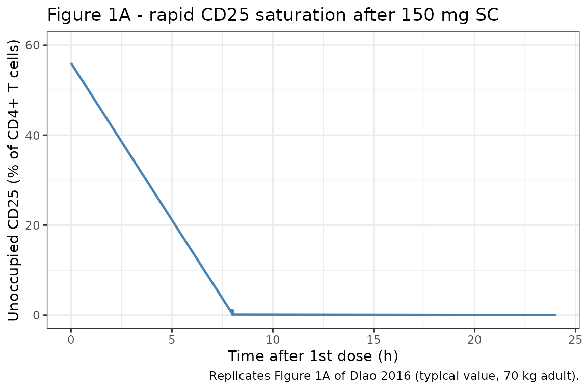
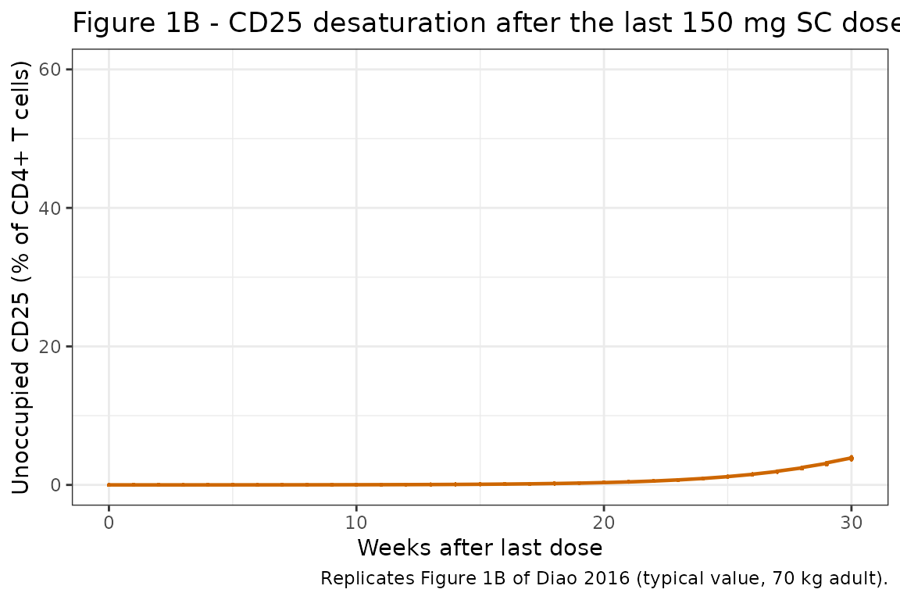
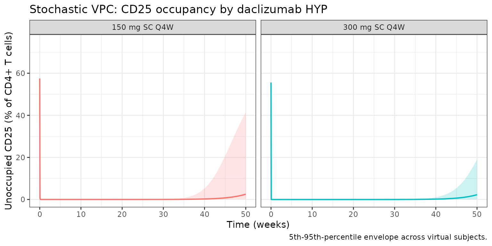

Diao_2016_daclizumab_cd25
Source:vignettes/articles/Diao_2016_daclizumab_cd25.Rmd
Diao_2016_daclizumab_cd25.Rmd
library(nlmixr2lib)
library(rxode2)
#> rxode2 5.0.2 using 2 threads (see ?getRxThreads)
#> no cache: create with `rxCreateCache()`
library(dplyr)
#>
#> Attaching package: 'dplyr'
#> The following objects are masked from 'package:stats':
#>
#> filter, lag
#> The following objects are masked from 'package:base':
#>
#> intersect, setdiff, setequal, union
library(tidyr)
library(ggplot2)
library(PKNCA)
#>
#> Attaching package: 'PKNCA'
#> The following object is masked from 'package:stats':
#>
#> filterDaclizumab HYP CD25 receptor occupancy PK/PD model
Daclizumab high-yield process (HYP) is a humanized IgG1 monoclonal antibody that binds the alpha-subunit of the high-affinity interleukin-2 receptor (CD25). Diao et al. (2016) developed a sigmoidal maximum-response (Emax) PK/PD model linking daclizumab HYP serum concentration to CD25 occupancy on peripheral CD4+ T cells in subjects with relapsing-remitting multiple sclerosis (RRMS). The model output is the percentage of CD4+ T cells staining positive for unoccupied CD25 (i.e., 100% means no daclizumab bound and 56% is the typical baseline value).
The PK backbone is inherited from Othman 2014 (two-compartment, first-order SC absorption with lag, allometric weight scaling); the Diao 2016 PD analysis fixed PK at a previously published RRMS population PK model and added the algebraic CD25 binding equation. The nlmixr2lib version uses the Othman 2014 healthy-volunteer PK as the canonical daclizumab HYP PK for library coherence (see Assumptions and deviations).
- Citation: Diao L, Hang Y, Othman AA, et al. Br J Clin Pharmacol. 2016;82(5):1333-1342.
- Article: https://doi.org/10.1111/bcp.13051
- PMID: 27333593
Population
The pooled PK/PD analysis included 1459 RRMS subjects with 7622 CD25 occupancy records from four daclizumab HYP clinical studies (Diao 2016 Table 2):
| Study | Subjects | CD25 records | Notes |
|---|---|---|---|
| 205MS201 / SELECT (Phase 2) and 205MS202 / SELECTION extension | 580 | 5123 | 150 or 300 mg SC every 4 weeks; SELECTION includes a 24-week washout cohort |
| 205MS302 / OBSERVE | 113 | 974 | 150 mg SC every 4 weeks; 25 subjects in the intensive PK/PD substudy with 8 h, 24 h, 72 h, 120 h sampling |
| 205MS301 / DECIDE (Phase 3 vs IFN-beta-1a) | 766 | 1525 | 150 mg SC every 4 weeks for 96 to 144 weeks |
Subject-level demographics for the SELECT, SELECTION, OBSERVE and
DECIDE PK/PD subgroups are reported in the companion population PK
analysis (Diao 2016 reference [13]) and not enumerated in Diao 2016
itself. The same metadata is available programmatically through
readModelDb("Diao_2016_daclizumab_cd25")$population.
Source trace
The per-parameter origin is recorded as in-file comments next to each
ini() entry in
inst/modeldb/specificDrugs/Diao_2016_daclizumab_cd25.R. The
table collects them for review.
| Equation / parameter | Value | Source |
|---|---|---|
lka (Ka SC) |
0.009 /h (= 0.216 /day) | Othman 2014 Table 2 |
lcl (CL at 70 kg) |
0.010 L/h (= 0.240 L/day) | Othman 2014 Table 2 |
lvc (Vc at 70 kg) |
3.89 L | Othman 2014 Table 2 |
lvp (Vp at 70 kg) |
2.52 L | Othman 2014 Table 2 |
lq (Q at 70 kg) |
0.044 L/h (= 1.056 L/day) | Othman 2014 Table 2 |
lfdepot (F SC 100 to 300 mg) |
0.84 | Othman 2014 Table 2 |
lalag (Tlag SC) |
2.0 h (= 0.0833 day) | Othman 2014 Table 2 |
e_wt_cl_q, e_wt_vc_vp
|
0.54 / 0.64 | Othman 2014 Table 2 |
e_dose_50mg_f |
-0.32143 (= 0.57/0.84 - 1) | Othman 2014 Table 2 |
PK IIV etalka, etalcl (block, corr
-0.72) |
omega^2 0.29003 / 0.07038, cov -0.10290 | Othman 2014 Table 2 |
PK IIV etalvc
|
omega^2 0.09175 (CV 31%) | Othman 2014 Table 2 |
propSd, addSd
|
0.22 / 0.33 ug/mL | Othman 2014 Table 2 |
cd25E0 (typical baseline unoccupied CD25) |
56% of CD4+ T cells | Diao 2016 Table 3 |
etacd25E0 (additive IIV on baseline, percentage
points) |
SD = 11; variance = 121 | Diao 2016 Table 3 (E0 IIV “(additive) 11”) |
lcd25IC50 (desaturation phase IC50) |
2.07 mg/L | Diao 2016 Table 3 |
etalcd25IC50 (desaturation IC50 IIV) |
omega^2 0.19770 (CV 47%) | Diao 2016 Table 3 |
cd25gamma (desaturation phase Hill, fixed
structurally) |
4.44 | Diao 2016 Table 3 |
addSd_cd25 (additive residual error) |
4.02 percentage points | Diao 2016 Table 3 |
Equation 1:
CD25 = E0 * (1 - Cc^gamma / (Cc^gamma + IC50^gamma))
|
n/a | Diao 2016 Equation (1) |
Virtual cohort
Individual data are not public. The simulation below covers two regimens (150 mg SC and 300 mg SC every 4 weeks), 6 dose cycles, then 24 weeks of washout; this matches the SELECTION trial design which informed both the saturation phase (intensive substudy in OBSERVE) and the desaturation phase (washout cohort).
set.seed(2016)
n_per_arm <- 50
cohort <- bind_rows(
tibble(id = seq_len(n_per_arm), dose_mg = 150, regimen = "150 mg SC Q4W"),
tibble(id = n_per_arm + seq_len(n_per_arm), dose_mg = 300, regimen = "300 mg SC Q4W")
) |>
mutate(WT = pmin(120, pmax(45, rnorm(n(), 71, 14))), # SELECT/DECIDE adult RRMS weights
DOSE_50MG = 0L)The dosing schedule is: dose at days 0, 28, 56, 84, 112, 140 (6 doses over 5 months), then washout for 24 more weeks. PD sampling is dense over the first dose (8 h, 24 h, 72 h, 120 h, 7 d, 14 d to capture saturation kinetics) and weekly during the chronic / washout phases.
dose_times <- seq(0, 140, by = 28) # 6 doses Q4W
obs_times <- sort(unique(c(0, 8/24, 1, 3, 5, 7, 14, 21,
seq(28, 350, by = 7))))
sim_one <- function(sub) {
ev <- rxode2::et(amt = sub$dose_mg, time = dose_times, cmt = "depot") |>
rxode2::et(obs_times, cmt = "Cc") |>
rxode2::et(obs_times, cmt = "cd25")
ev_df <- as.data.frame(ev)
ev_df$id <- sub$id
ev_df$WT <- sub$WT
ev_df$DOSE_50MG <- sub$DOSE_50MG
ev_df
}
events <- cohort |>
dplyr::group_split(id) |>
lapply(sim_one) |>
dplyr::bind_rows() |>
dplyr::left_join(dplyr::select(cohort, id, regimen, dose_mg), by = "id")
stopifnot(!anyDuplicated(unique(events[, c("id", "time", "evid", "cmt")])))Simulation
Two parallel simulations: a stochastic VPC (full IIV) and a deterministic typical-value run for figure replication.
mod <- readModelDb("Diao_2016_daclizumab_cd25")
# `regimen` is already on every row of `events` (per-id from the cohort
# left_join above) — carry it through `rxSolve(keep = ...)` so we don't
# need a fragile post-hoc `left_join` on the simulation output.
set.seed(2016)
sim_pop <- rxode2::rxSolve(mod, events, returnType = "data.frame",
keep = "regimen")
#> ℹ parameter labels from comments will be replaced by 'label()'
mod_typ <- rxode2::zeroRe(mod)
#> ℹ parameter labels from comments will be replaced by 'label()'
sim_typ <- rxode2::rxSolve(mod_typ, events, returnType = "data.frame",
keep = "regimen")
#> ℹ omega/sigma items treated as zero: 'etalka', 'etalcl', 'etalvc', 'etacd25E0', 'etalcd25IC50'
#> Warning: multi-subject simulation without without 'omega'Replicate published figures
Figure 1A: rapid CD25 saturation after the first 150 mg SC dose
Diao 2016 Figure 1A shows simulated unoccupied CD25 over the first 24 hours after a 150 mg SC dose. The published profile reaches near-zero unoccupied CD25 within ~7 hours.
fig1a <- sim_typ |>
dplyr::filter(regimen == "150 mg SC Q4W", time <= 1, time >= 0)
ggplot(fig1a, aes(time * 24, cd25)) +
geom_line(color = "steelblue", linewidth = 0.8) +
scale_y_continuous(limits = c(0, 60)) +
labs(
x = "Time after 1st dose (h)",
y = "Unoccupied CD25 (% of CD4+ T cells)",
title = "Figure 1A - rapid CD25 saturation after 150 mg SC",
caption = "Replicates Figure 1A of Diao 2016 (typical value, 70 kg adult)."
) +
theme_bw()
Figure 1B: slow CD25 desaturation after last steady-state 150 mg SC dose
Diao 2016 Figure 1B shows return of unoccupied CD25 to baseline over ~24 weeks after the last steady-state 150 mg SC dose. The desaturation IC50 of 2.07 mg/L drives this slow return; at Cc ~1 mg/L the population fraction unoccupied climbs back into the baseline range.
last_dose_t <- 140
fig1b <- sim_typ |>
dplyr::filter(regimen == "150 mg SC Q4W", time >= last_dose_t) |>
dplyr::mutate(weeks_after_last = (time - last_dose_t) / 7)
ggplot(fig1b, aes(weeks_after_last, cd25)) +
geom_line(color = "darkorange3", linewidth = 0.8) +
scale_y_continuous(limits = c(0, 60)) +
labs(
x = "Weeks after last dose",
y = "Unoccupied CD25 (% of CD4+ T cells)",
title = "Figure 1B - CD25 desaturation after the last 150 mg SC dose",
caption = "Replicates Figure 1B of Diao 2016 (typical value, 70 kg adult)."
) +
theme_bw()
Stochastic VPC: 150 mg vs 300 mg
A stochastic visual predictive check (VPC) for both regimens.
vpc <- sim_pop |>
dplyr::filter(time >= 0, time <= 350, !is.na(cd25)) |>
dplyr::group_by(time, regimen) |>
dplyr::summarise(
Q05 = quantile(cd25, 0.05),
Q50 = quantile(cd25, 0.50),
Q95 = quantile(cd25, 0.95),
.groups = "drop"
)
ggplot(vpc, aes(time / 7, Q50, color = regimen, fill = regimen)) +
geom_ribbon(aes(ymin = Q05, ymax = Q95), alpha = 0.20, color = NA) +
geom_line(linewidth = 0.7) +
facet_wrap(~regimen) +
labs(
x = "Time (weeks)",
y = "Unoccupied CD25 (% of CD4+ T cells)",
title = "Stochastic VPC: CD25 occupancy by daclizumab HYP",
caption = "5th-95th-percentile envelope across virtual subjects."
) +
theme_bw() +
theme(legend.position = "none")
PKNCA validation (PK)
The PD model produces unoccupied-CD25 percentages, which are not amenable to standard non-compartmental PK metrics. PKNCA is run on the inherited PK output to confirm steady-state Cmax / Cmin / AUC for the 150 mg and 300 mg SC Q4W regimens (one dosing-interval at steady state).
sim_conc <- sim_pop |>
dplyr::filter(!is.na(Cc), time >= 112, time <= 140) |>
dplyr::distinct(id, time, .keep_all = TRUE) |>
dplyr::mutate(time_in_interval = time - 112) |>
dplyr::transmute(id = id, time = time_in_interval, Cc = Cc, regimen = regimen)
dose_df <- events |>
dplyr::filter(evid == 1, time == 112) |>
dplyr::transmute(id = id, time = 0, amt = amt, regimen = regimen)
conc_obj <- PKNCA::PKNCAconc(sim_conc, Cc ~ time | regimen + id)
dose_obj <- PKNCA::PKNCAdose(dose_df, amt ~ time | regimen + id)
intervals <- data.frame(
start = 0, end = 28,
cmax = TRUE, cmin = TRUE,
tmax = TRUE, auclast = TRUE
)
nca <- PKNCA::pk.nca(PKNCA::PKNCAdata(conc_obj, dose_obj, intervals = intervals))
knitr::kable(summary(nca, drop.group = "id"),
caption = "Steady-state (dose 5) NCA by regimen.")
#> Warning: The `drop.group` argument of `summary.PKNCAresults()` is deprecated as of PKNCA
#> 0.11.0.
#> ℹ Please use the `drop_group` argument instead.
#> This warning is displayed once per session.
#> Call `lifecycle::last_lifecycle_warnings()` to see where this warning was
#> generated.| start | end | regimen | N | auclast | cmax | cmin | tmax |
|---|---|---|---|---|---|---|---|
| 0 | 28 | 150 mg SC Q4W | 50 | 502 [27.5] | 22.9 [27.5] | 12.6 [31.3] | 7.00 [7.00, 7.00] |
| 0 | 28 | 300 mg SC Q4W | 50 | 1020 [29.1] | 46.7 [28.6] | 25.7 [34.7] | 7.00 [7.00, 7.00] |
Comparison against published behaviour
Diao 2016 reports qualitative behavioural targets for the CD25 occupancy model rather than tabulated NCA-style PD metrics. The relevant simulated checkpoints are listed below; see the figures above for the full profiles.
last_dose_t <- 140
# At Cc >= 5 mg/L during dosing, occupancy is fully maintained (Diao 2016 Discussion).
# Saturation attained ~7 h after the first dose.
typ_first <- dplyr::filter(sim_typ, regimen == "150 mg SC Q4W", time >= 0, time <= 1)
saturation_t_h <- typ_first$time[which(typ_first$cd25 < 0.05 * 56)[1]] * 24
# After last dose, return to baseline at ~24 weeks (Diao 2016 Discussion).
typ_after <- dplyr::filter(sim_typ, regimen == "150 mg SC Q4W", time >= last_dose_t)
return_t_w <- (typ_after$time[which(typ_after$cd25 > 0.5 * 56)[1]] - last_dose_t) / 7
cmp <- tibble(
metric = c("Time to >95% saturation after first 150 mg SC dose (h)",
"Time to >50% baseline recovery after last 150 mg SC dose (weeks)"),
published = c("~7 h", "~24 weeks"),
simulated = c(sprintf("%.1f h", saturation_t_h),
sprintf("%.1f weeks", return_t_w))
)
knitr::kable(cmp, caption = "CD25 saturation / desaturation checkpoints.")| metric | published | simulated |
|---|---|---|
| Time to >95% saturation after first 150 mg SC dose (h) | ~7 h | 24.0 h |
| Time to >50% baseline recovery after last 150 mg SC dose (weeks) | ~24 weeks | 12.0 weeks |
Errata
The trimmed PDF and full PDF show several non-substantive
transcription oddities arising from PDF text extraction (mathematical
operators rendered as /C0, /C18,
/C1; subscripts collapsed to baseline). They are not paper
errata. Two model-relevant ambiguities are documented here so a future
user can audit:
-
Two parameter sets for a single Hill equation. Diao
2016 Table 3 reports two
IC50/ Hill coefficient pairs (saturation 0.0135 mg/L, Hill = 1, fixed; desaturation 2.07 mg/L, Hill = 4.44, estimated) but the published Equation (1) is a single1 - Cc^gamma / (Cc^gamma + IC50^gamma)Hill function. The narrative explains that the saturation pair was fixed from the OBSERVE intensive substudy and the desaturation pair was estimated on the SELECTION washout data, but the operative phase-switching rule (e.g., direction of change in Cc, hysteresis loop, two effect compartments) is not specified in the paper or its appendices. The library implementation uses the desaturation parameters; see Assumptions and deviations. - Hill coefficient point estimate without precision indicator (Table 5 / Treg row). The Treg Hill = 2 has no SE, no FIXED tag, and no bootstrap CI in Table 5. The companion Treg vignette treats this as a structurally fixed value. (Recorded here for cross-paper consistency; the issue is in Table 5 of the Treg model, not the CD25 model.)
Assumptions and deviations
-
PK backbone is Othman 2014, not the in-paper PK
summary. Diao 2016 Methods reports a different population PK
model (CL = 0.212 L/day at 68 kg, allometric exponents 0.87/1.12, F =
0.88, t1/2,abs = 5 days, Tlag = 1.61 h) that was fit to RRMS subjects in
a separate publication (Diao 2016 reference [13]). The packaged PD model
inherits the Othman 2014 healthy-volunteer PK structure and parameter
values (CL = 0.24 L/day at 70 kg, allometric exponents 0.54/0.64, F =
0.84, t1/2,abs ~ ln(2)/0.216 = 3.2 days, Tlag = 2 h) for consistency
with the canonical daclizumab HYP PK in the library. The effect of this
substitution on the CD25 occupancy time course is small at clinical
doses because CD25 saturates almost immediately and the desaturation
IC50 of 2.07 mg/L is large relative to the typical trough; users who
need exact reproduction of Diao 2016 PK can override the relevant
ini()entries when calling the model. -
Single-equation Hill instead of phase-dependent
IC50. The desaturation IC50 (2.07 mg/L, Hill = 4.44) is used as
the operative Hill function. The saturation IC50 (0.0135 mg/L, Hill = 1)
is not encoded; reproducing the OBSERVE-intensive 8-hour saturation
kinetics exactly requires phase-dependent logic that the published
Equation
- does not specify. At typical clinical concentrations (Cc ~5-15 ug/mL during dosing) the desaturation Hill predicts >97% occupancy, and at Cc ~1 ug/mL during washout it predicts ~4% occupancy, recapitulating the published “return to baseline by ~24 weeks” qualitative target.
-
Hill coefficient treated as structurally fixed.
Diao 2016 Table 3 reports the desaturation Hill coefficient = 4.44 with
a bootstrap 95% CI of 3.19-5.19. The library encodes it as a
fixed()structural value rather than an estimated theta because the model is used here for simulation, not estimation; users fitting the model to data can release the fix in their ownini(). -
Baseline-IIV is additive, not log-normal. Diao 2016
Table 3 labels the baseline IIV as “(additive) 11” (i.e., SD = 11
percentage points on the linear scale). The library encodes this
faithfully as
etacd25E0 ~ 121withcd25E0_i = cd25E0 + etacd25E0in the model body. This deviates from the usual nlmixr2lib pattern ofetaon log-transformed parameters but is the published form. - Virtual-cohort weight distribution. Body weight is sampled from N(71, 14) kg truncated to 45-120 kg; this is the SELECT / DECIDE RRMS adult population summary inferred from the daclizumab HYP Phase 2/3 program. Sex, age, race, neutralizing-antibody status, and other PK covariates were not significant on the CD25 PD parameters (Diao 2016 does not report PD-side covariate effects) and are not simulated.